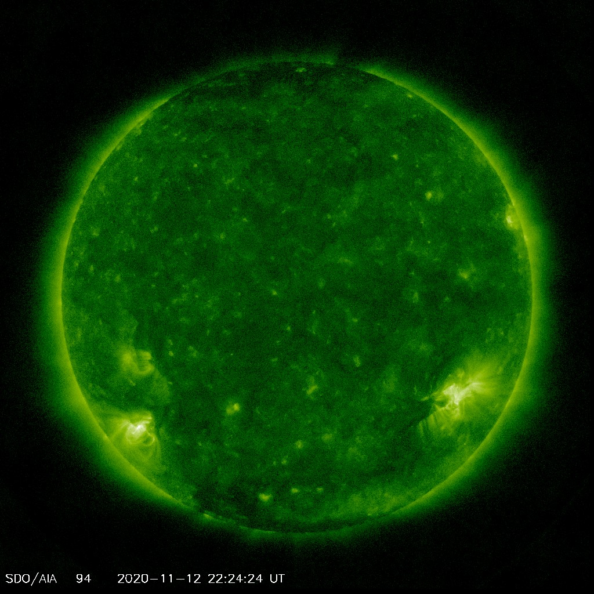

Now the website has multiple pages!
Below are some extreme ultraviolet (~10nm) images taken by the Solar Dynamics Observatory. You can create your own versions of these by visiting their website.
Try clicking on the image to look at the Sun in different wavelengths!